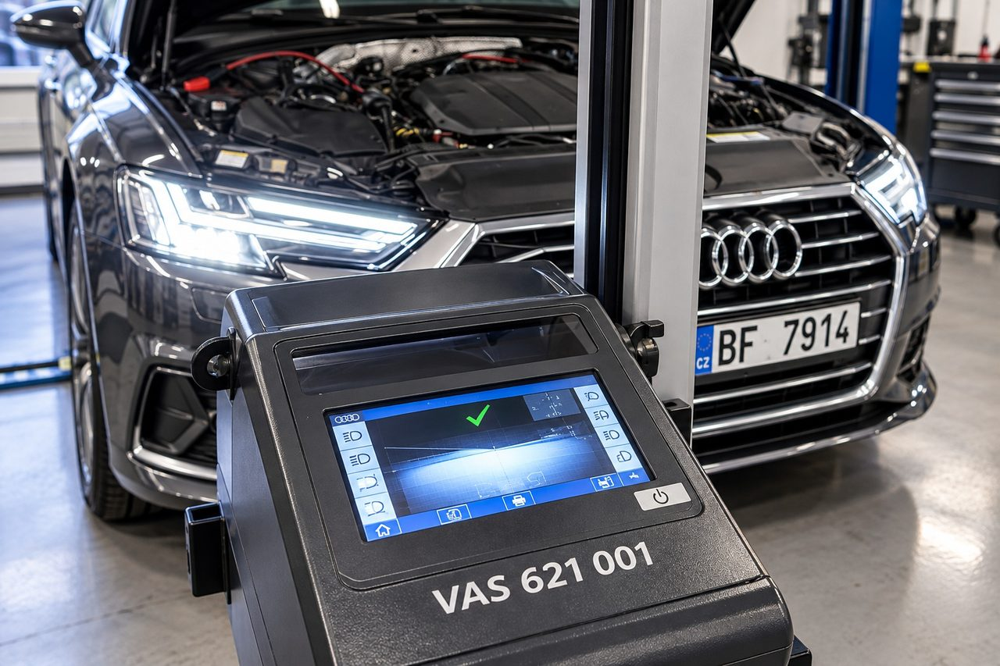

Scheinwerfereinstellung
J&S servis ist seit 1994 auf Volkswagen, Audi, Škoda, SEAT und CUPRA spezialisiert.
Wir prüfen und justieren Haupt- und vordere Nebelscheinwerfer fachgerecht und kalibrieren sie je nach System. Dafür nutzen wir das elektronische Einstellgerät VAS 621 001 und ODIS nach vorgeschriebenen Herstellerverfahren.
Wir stellen ein:
- Halogen-, Xenon- und Bi-Xenon-Scheinwerfer
- LED, Matrix LED und HD Matrix LED
- Scheinwerfer mit Laserfernlicht einschließlich ausgewählter Audi A8 und R8
- Vordere Nebelscheinwerfer
- Professionelle Einstellung mit VAS 621 001
- Kalibrierung von Matrix LED und HD Matrix LED mit ODIS
- Einstellung von Haupt- und Nebelscheinwerfern
Preis
Standardeinstellung beider Hauptscheinwerfer, Preise einschließlich MwSt.:
- Halogenscheinwerfer: ab 950 Kč
- LED-Scheinwerfer: ab 1 500 Kč
- Matrix-LED-Scheinwerfer: ab 2 100 Kč
- Audi-Laserscheinwerfer: ab 2 400 Kč
Xenon- und weitere spezielle Systeme, aufwendigere Kalibrierungen und die separate Einstellung vorderer Nebelscheinwerfer kalkulieren wir individuell.

Kalibrierung von Matrix LED und HD Matrix LED
Bei ausgewählten Systemen messen wir Winkelabweichungen der Referenzlichtbilder und geben die vorgeschriebenen Korrekturwerte in ODIS ein. Je nach Fahrzeug führen wir auch erforderliche Grundeinstellungen von adaptivem Licht und Leuchtweitenregelung durch.
Audi-Laserscheinwerfer
Wir prüfen und justieren nach dem jeweiligen Herstellerverfahren, ohne Eingriffe in das Lasermodul.
Preise und Leistungsumfang
Die Variantenpreise gelten für die Standardeinstellung beider Hauptscheinwerfer. Xenon- und weitere spezielle Systeme, aufwendigere Kalibrierungen und die separate Einstellung vorderer Nebelscheinwerfer kalkulieren wir individuell.
Wir empfehlen eine Einstellung nach Scheinwerferwechsel, Karosserie- oder Fahrwerksreparaturen sowie bei falscher Fahrbahnausleuchtung. Den Umfang bestimmen wir nach Konstruktion und technischem Zustand des Fahrzeugs.
Vor der Terminvereinbarung
Die mechanische Einstellung des Lichtbündels und diagnostische Kalibrierschritte sind je nach System unterschiedliche Arbeiten. Teilen Sie uns bei der Buchung VIN, Beanstandung und gegebenenfalls frühere Scheinwerfer- oder Fahrwerksarbeiten mit.